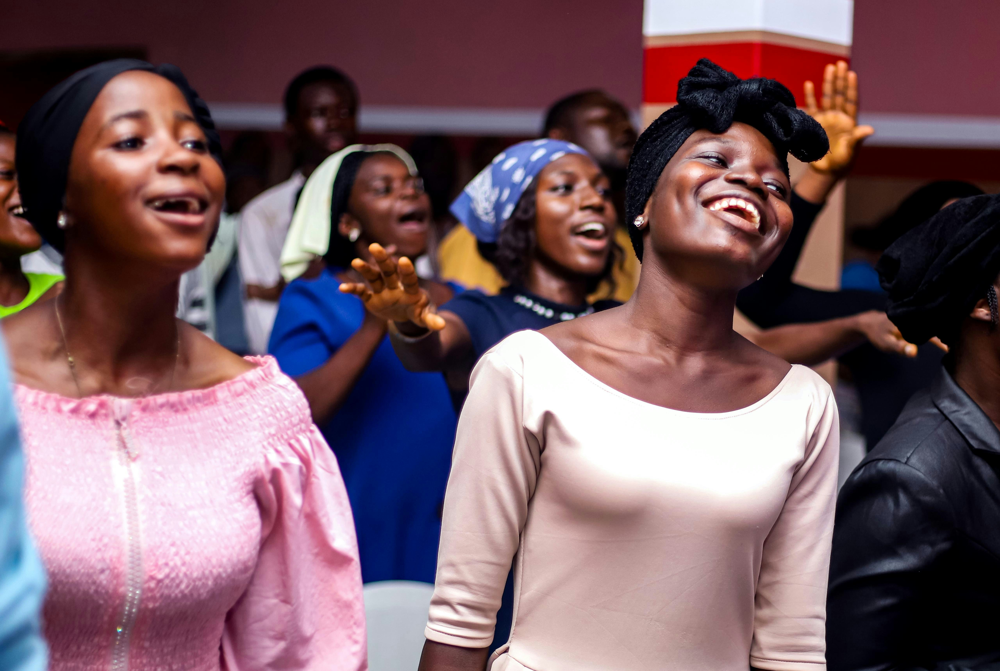
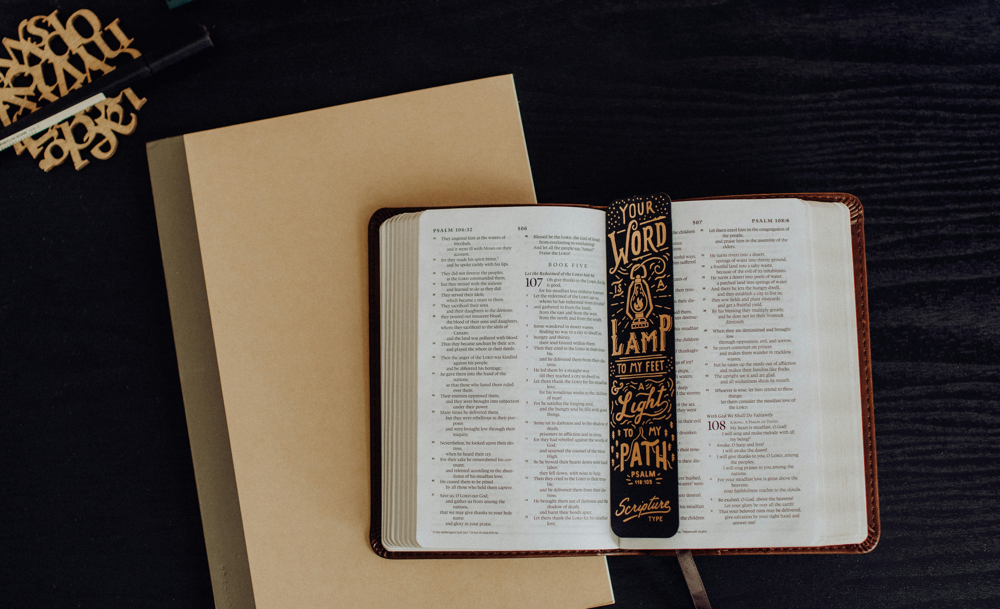
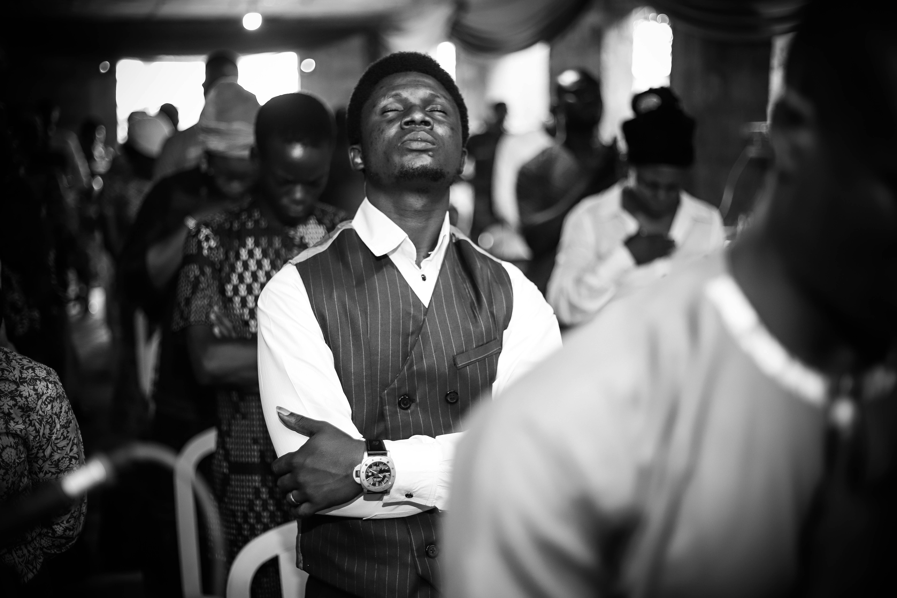

Who We Are
Who We Are
Revived Christian Life Ministry (RCLM) is a vibrant and dynamic church, based in the heart of Kaduna, Nigeria. The ministry is deeply rooted in the teachings and life of Jesus Christ, who is the cornerstone of our faith and foundation. RCLM is committed to spreading the Gospel of Jesus Christ, transforming lives, and building a community of believers who are passionate about living out their faith in every aspect of life. Our mission is to lead people into a growing relationship with Jesus Christ, empowering them to discover their God-given purpose and equipping them to make a positive impact in their families, communities, and the world at large. We believe that through the power of the Holy Spirit, lives can be changed, broken hearts can be healed, and destinies can be restored. At RCLM, worship is at the heart of our ministry. Our services are filled with heartfelt praise, inspiring messages, and an atmosphere where the presence of God is awesome. We believe in the power of prayer and the importance of studying God's Word, and we encourage our members to cultivate a personal and intimate relationship with Jesus Christ. Our church is a place where people from all walks of life can come together to experience the love of Christ and the fellowship of believers.
We are a family-oriented church that values unity, compassion, and service. Whether you are a lifelong believer or someone seeking answers about faith, you are welcome at RCLM. In addition to our regular worship services, we offer a variety of programs and ministries designed to meet the spiritual, emotional, and physical needs of our members and the community. From youth and children's ministries to outreach programs and discipleship classes, there is something for everyone at RCLM. As a church centered on Jesus Christ, we are dedicated to living out His teachings and being a light in the world. We invite you to join us on this journey as we grow together in faith in Christ to make a difference in the world around us. At Revived Christian Life Ministry, you will find a place to belong, a place to grow, and a place to serve.
Our Service Times

Sunday Services
Join us every Sunday at 10am for spirit-filled worship, faith-building messages, and fellowship.

Bible Study
Every Tuesday at 5:30pm, join our Bible Study to dive deeper into God's Word.

Deliverance Service
Every Thursday at 5:30pm, come for our Deliverance Service, dedicated to breakthrough and freedom in Christ.